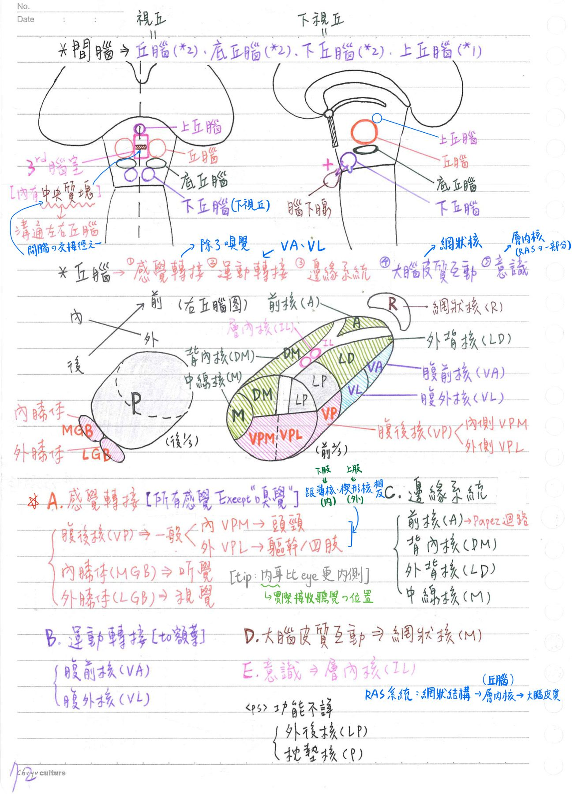
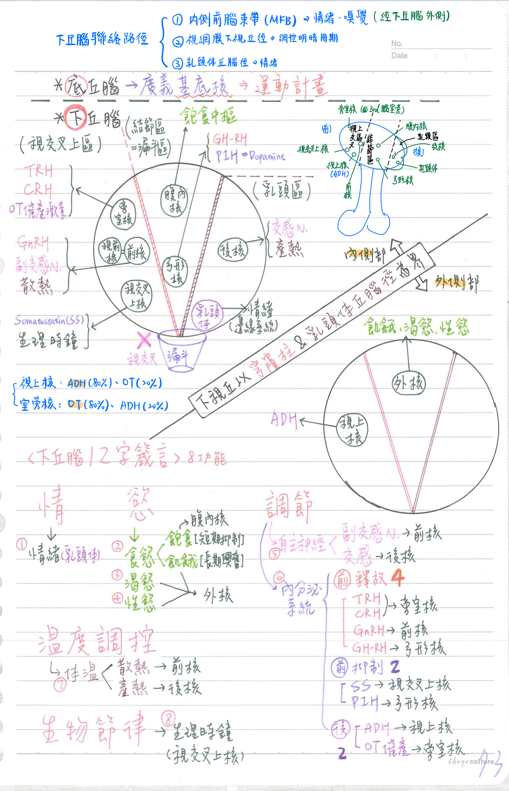
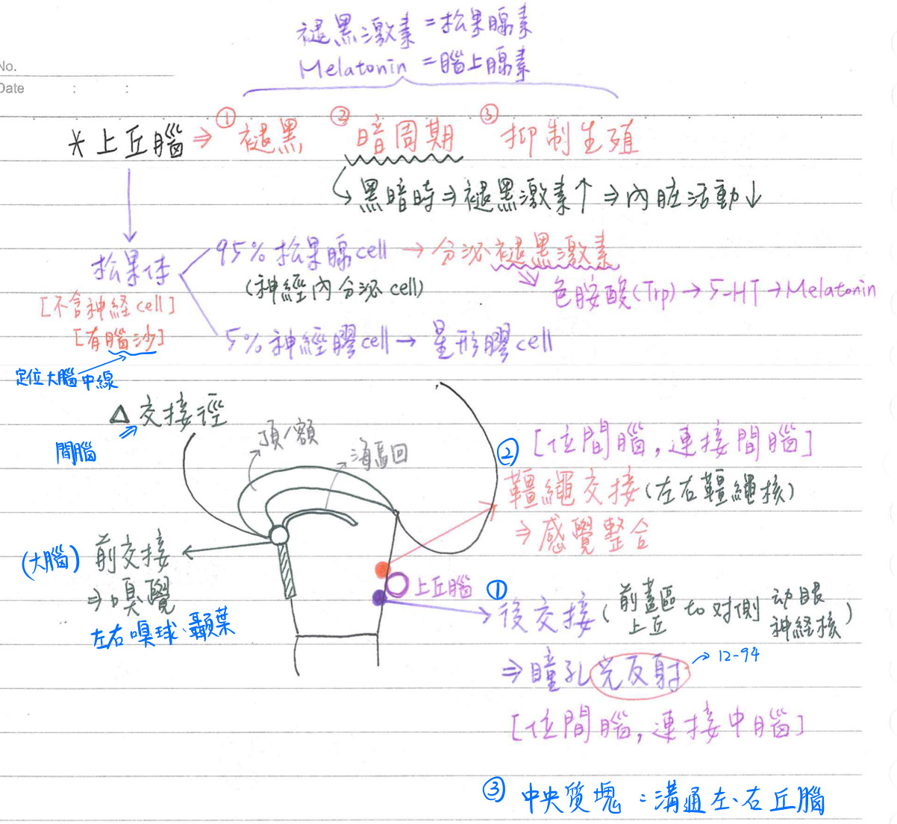

🧠 CNS-間腦
間腦(diencephalon)-基本組成
- 丘腦(thalamus=視丘)：左右成對
- 底丘腦(subthalamus)：左右成對
- 下丘腦(hypothalamus=下視丘)：左右成對
- 上丘腦(epithalamus，主要為松果體)：單一
間腦-血液供應
- 後交通A
- ★後大腦A
- 基底A
等之分枝
丘腦(thalamus)
丘腦-解剖構造
- [重點]位於第三腦室之兩側
- 左右丘腦間具中央質塊(mass intermedia)，含交接徑(溝通左、右丘腦)
丘腦-生理功能
- [重點]★所有感覺(嗅覺除外)之轉運站(最重要的功能)：神經元在此經突觸傳遞訊號給下個神經元，再傳至大腦皮質
- 外膝體(lat. geniculate body)：★視覺之轉接核
- 內膝體(med. geniculate body)：★聽覺之轉接核
[何宣hint：眼球比內耳(實際接收聽覺的地方)更靠近體表] - 腹後核(ventroposterior nucleus, VP)：一般感覺之轉接核、味覺
- ★內側腹後核(ventral posteromedial, VPM)：頭頸一般感覺之轉接核
- ★外側腹後核(ventral posterolateral, VPL)：軀幹四肢一般感覺之轉接核
- 運動的轉接核：★腹前核(VA)、腹外核(VL)
- 負責將來自基底核&小腦後葉的運動計畫→轉接至大腦額葉運動區
- 邊緣系統之一部份：前核(A)、背內核(DM)、外背核(LD)、中線核
- 司情感、記憶等：與扣帶回、下視丘乳頭體有往返神經迴路
- [重點]強化大腦皮質 & 丘腦之雙向連結：網狀核(reticular nu.)
- 輸入：大腦皮質/網狀結構
- 輸出：其他丘腦核/大腦皮質
- [重點]調節意識狀態/清醒：層內核(intralaminar nu.)
- 輸入：網狀結構
- 輸出：大腦皮質

底丘腦(subthalamus)
- 解剖：位於丘腦之下方
- 生理：隨意運動的計畫(廣義基底核)
- 用glutamate→興奮內蒼白球(indirect loop)
[重點]下丘腦(hypothalamus)
下丘腦-解剖：位於丘腦下方
- 下丘腦由下仰視，由前而後依序為：視交叉(optic chiasma)、灰白結節(tuber cinereum)&漏斗(infundibulum)、乳頭體(mammillary body)
- 以穹窿柱 & 乳頭體視徑為界分成：
- 內側部(medial zone)：
- 前方：視交叉上區(suprachiasmatic region)
- 視交叉上核(suprachiasmatic, SCN)：★★★生物時鐘、可製造體抑素(somatostatin, SS)
- 旁室核(paraventricular)：製造催産素(OT)、TRH、CRH；也跟藥物成癮有關(like伏隔核)
- 前核(anterior) & 視前核(preoptic)：散熱中樞、副交感神經中樞、可製造Gn-RH
[hint：副交感⇒冷靜；冷靜下來才能散熱]
- 中央：結節區(tuberal region)
- 下方：有漏斗(infundibular)[=神經柄(neural stalk)] 與腦下腺相接
- 腹內核(ventromedial)：飽食(satiety)中樞所在地 [hint：食物在”腹內”→飽]
- ★弓形核(arcuate)=漏斗核：可製造GH-RH、PIH(=dopamine)
- 後方：乳頭區(mamillary region)
- 乳頭體(mamillary body)：邊緣系統的一部分（情緒）
備註
應該不是"緣葉系統"，我沒找到這個翻譯。是邊緣系統
- 後核(posterior nu.)：產熱中樞、交感神經中樞 <cf>和前核相反
[hint：交感⇒興奮；興奮會覺得身體很熱]
- 乳頭體(mamillary body)：邊緣系統的一部分（情緒）
- 前方：視交叉上區(suprachiasmatic region)
- 外側部(lateral zone)：
- 視上核(supraoptic)：可製造ADH
- 外核(lateral nu.)：飢餓中樞、渴慾中樞、性慾中樞(各種生理慾望) [hint：食物在腹”外”→餓]
- 內側部(medial zone)：
下丘腦-聯絡路徑：
- [臨床上不重要but常考][109-1出現過]內側前腦束帶(medial forebrain budle, MFB)：途經下視丘外側
- 路徑：杏仁核/鉤狀回/視前區/中膈核→中腦黑質/縫核/藍斑(藍區)
- 與情緒、嗅覺有關
- 視網膜下視丘徑(retinohypothalamic tract)：視網膜(retina)→視交叉上核(SCN)
- 與調控明暗周期有關
- 乳頭體丘腦徑(mamillothalamic tract)：乳頭體→丘腦前核
- 與情緒有關
下丘腦-生理：12字訣[情、(食、渴、情)慾、調節、溫度調控、生物節律]
- 情緒(emotion)：如憤怒、恐懼等(乳頭體丘腦徑)
- 食慾：
- 下視丘外核：飢餓中樞(平時持續興奮，直接刺激食慾)
- 下視丘腹內核：飽食中樞(短期抑制→抑制飢餓中樞)
- 渴慾：
- 滲透壓接受器：下視丘(前方)
- 渴慾中樞：下視丘外側(下視丘外核)
- 性慾(sexual desire)：接受血液中雌激素、雄性激素(女性體內也是其較高)等興奮
- [重點]調節自主神經系統：下視丘為自主神經之最高中樞
- 下丘腦前核：副交感神經中樞
- 下丘腦後核：交感神經中樞
- 調節內分泌系統：下視丘為內分泌的最高中樞
- 製造腦下腺後葉激素：
- 視上核(supraopitc)：製造抗利尿激素(ADH)
- 旁室核(paraventricular)：製造催産激素(oxytosin)
- 經下視丘-腦下腺徑(hypothalamohypophyseal tract)之神經纖維運送，由腦下腺後葉釋放
- 調節腦下腺前葉製造激素：
- 釋放激素(EX：GRH、RH、GnRH、CRH)
→促腦下腺前葉產生GH、TSH、FSH/LH、ACTH ↑ - 抑制激素(如SS、dopamine)
→促腦下腺前葉產生GH、PL ↓ - 下視丘→腦垂腺之激素路徑(走血液循環)：
- 上腦下腺A→下視丘内側隆突(medial eminence)微血管→腦下腺門靜脈→腦下腺前葉微血管→腦下腺V
(下腦下腺A：匯入腦下腺前葉微血管)
- 上腦下腺A→下視丘内側隆突(medial eminence)微血管→腦下腺門靜脈→腦下腺前葉微血管→腦下腺V
- 釋放激素(EX：GRH、RH、GnRH、CRH)
- 製造腦下腺後葉激素：
- 調節體溫：
- ★[110-1]體溫調節中樞：下視丘
- 前核：散熱中樞
- 後核：產熱中樞
- ★[110-1]體溫調節中樞：下視丘
- 生物節律(biological rhythm)：
- ★★★生物時鐘：位於視交叉上核(SCN)
- 功能：調控體溫、睡眠醒覺周期、明暗周期、支氣管張力、皮質醇(cortisol)濃度、日夜規律(circadian rhythm)
- 視網膜下視丘徑(retinohypothalamic tract)：
- 視網膜(神經節細胞)→下視丘視交叉上核
- 與明暗周期(light-dark cycle)相關

上丘腦(epithalamus)：丘腦之後上方，正中線
上丘腦-★松果體(pineal body)
- 解剖：含兩種細胞
- ★松果腺細胞(pinealocyte，佔95%)：
- 具神經内分泌活性，可分泌退黑激素(melatonin)
- 色胺酸(Trp)→5-HT→melatonin
- 神經膠細胞(glial cell，佔5%)：
- 主為星形膠細胞(astrocyte)；但松果體不含神經細胞
- [重點]★★腦沙(brain sand)：松果體之特微
- 由磷酸鈣和碳酸鈣沈積於結合蛋白(carrier protein)形成→鈣化點
- 其數目隨年齡增加而增加
- X光無法穿透→用來定位大腦中線
- ★松果腺細胞(pinealocyte，佔95%)：
- 生理：可分泌褪黑激素(melatonin)→
- 抑制生殖，防止性早熟(sexual precocity)
- 兒童松果線腫瘤：會造成性早熟
- 作用於皮膚色素細胞(melanophore)，使皮膚顏色變淡(褪黑)
- 使身體適應明暗周期(light-dark cycle)：(最重要功能)
- 當黑暗時→退黑激素↑→內臓活動度↓ (for休息)
→使身體適黑暗環境 - 可用於治療睡眠障礙
- 當黑暗時→退黑激素↑→內臓活動度↓ (for休息)
- 抑制生殖，防止性早熟(sexual precocity)
上丘腦-★★韁繩核(habenular nucleus)：只要記得位於上丘腦即可
- 輸入：
- 杏仁核(amygdaloid)：經丘腦★★髓紋(stria medullaris thalami)
- 海馬形成(hippocampal formation)：經穹窿(fornix)
- 輸出：★至中腦之頂(tectum)、★大腦腳間核(interpeduncularn.)、網狀結構及視丘(thalamus)
- 補充：
- 功能：連接前腦(大腦+間腦)與中腦，近年研究顯示★與行為動機與成癮有關
上丘腦-(間腦的)交接徑(commission tract)：左右相通
- 後交接(posterior commissure)：和間接光反射(一致性光反射)有關
- 位於松果體柄(pineal stalk)下方，屬於間腦之白質
- 主要連接中腦前蓋區(pretectal)/上丘→對側動眼神經(E-W)核
- 和瞳孔(光)反射有關
- 韁繩交接(habenular commissure)：
- 位於松果體柄之上方
- 主要連接左、右韁繩核
- [重點]與感覺整合(嗅覺、內臟感覺、體感覺)等有關

間腦、大腦-3大交接徑對照
| 間腦3大交接徑 | 大腦3大交接徑 |
|---|---|
| 後交接(中腦前蓋區/上丘→對側動眼神經(E-W)核) [瞳孔光反射] | 前交接(左右嗅球、顳葉) |
| 韁繩交接(左右韁繩核) [感覺整合] | 穹窿交接(左右海馬迴) |
| 中央質塊(溝通左右丘腦) | 腁胝體(左右額葉、頂葉) |
備註
- 後交接(中腦前蓋區/上丘→對側動眼神經(E-W)核)
我猜是因為中腦前蓋區包含上丘上端的一部分神經核，所以這邊才會列出上丘。
但上丘主要是和目視搜尋有關~
光反射一般來說還是講前蓋核→E-W核
📖 書本補充：與筆記不同或筆記沒寫到的地方
⚠️
以下為對照書本後整理，筆記原文未更動。標「筆記 vs 書」的是兩邊寫法不同、建議回頭確認的地方。
丘腦的神經核及聯繫（p.438）
- 書把丘腦核分成三類，並列出各核的傳入→傳出（紅字為書上要求特別熟記者）：
- 轉運核（relay nuclei）：
- 前核：乳頭體→扣帶回。
- 腹前核（VA）：蒼白球→額前皮質。
- 腹外核（VL）：蒼白球和小腦→運動皮質。
- 腹後內側（VPm）：頭部的體感覺→主要體感覺皮質。
- 腹後外側（VPl）：軀幹和四肢的體感覺→主要體感覺皮質。
- 內側膝狀體：下丘→主要聽覺皮質。
- 外側膝狀體：上丘和視徑→主要視覺皮質。
- 聯絡核（association nuclei）：
- 外背核（LD）：頂葉→扣帶皮質。
- 外後核和枕部（pulvinar）：上丘和頂葉→視覺聯絡皮質（筆記沒有提到枕部）。
- 其它：
- 板內核（intralaminar）：網狀形成→各處皮質。
- 網狀核（reticular）：丘腦→丘腦。
- 轉運核（relay nuclei）：
- 筆記 vs 書：網狀核的聯繫，筆記寫「輸入：大腦皮質／網狀結構；輸出：其他丘腦核／大腦皮質」；書上的表格寫傳入＝丘腦、傳出＝丘腦（不投射到大腦皮質）。
- 考題補充：味覺訊息傳入丘腦的 VPm；嗅覺不經丘腦，直接進入梨狀皮質、杏仁體等邊緣系統成分（111-2-4）。
- 書的提示：
- 間腦＝上丘腦（松果腺）＋丘腦＋下丘腦＋丘腦下部。
- 丘腦下部結構上屬於間腦，功能上屬於基底核。
腦下腺（p.440）
- 筆記此頁只提到下視丘—腦下腺的聯繫，書把腦下腺放在間腦這節，重點如下：
- 前葉（垂體腺體部）：來自原口（stomodeum）的 Rathke 氏囊往上生長，屬外胚層；分結節部、中間部、遠部。
- 後葉（垂體神經部）：由間腦往下生長，屬神經外胚層；包含正中隆起、漏斗柄、神經部。
- 前葉激素：GH（分泌細胞數量最多）、PRL（分泌細胞數量最少）、TSH、ACTH、MSH、FSH、LH。
- 前葉細胞：嗜酸性細胞分泌 GH 及 PRL；嗜鹼性細胞分泌 ACTH、FSH、LH 及 TSH；另有嫌色細胞。
- 後葉的激素（ADH＝血管加壓素、催產素）是由下視丘的視上核和室旁核分泌；後葉本身的特殊細胞是垂體細胞（pituicyte），為特化的神經膠，含 GFAP（類似星狀膠細胞）。
- 書的提示：特別注意兩部分的胚胎發育；後葉內沒有分泌激素的細胞；下丘腦軸突末梢在與微血管接觸處膨大成赫氏小體（Herring body），內有存放 ADH 及催產素的分泌小泡。
📝 書中歷屆考題（點選答案作答）
111-2-4p.439
下列何者不經過丘腦 (thalamus)，直接傳入邊緣系統 (limbic system)？
💡 嗅覺直接進入梨狀皮質、杏仁體等邊緣系統成分；視覺、聽覺分別經外側、內側膝狀體；味覺經 VPm。
100-1-32p.441
關於腦垂體的發育，下列敘述何者正確？
💡 漏斗屬於垂體神經部；神經垂體衍生自間腦；神經外胚層發育為後葉。
103-2-39p.441
有關腦下垂體 (pituitary gland)，下列敘述何項錯誤？
💡 前葉來自外胚層（Rathke 氏囊），後葉來自間腦。
107-2-45p.441
腦下垂體不具有下列何種組織構造？
💡 閏管是外分泌腺才有的管道。
110-1-45p.441
腦下腺前葉 (anterior lobe of pituitary gland) 嗜酸性細胞 (acidophil) 內，呈嗜酸性的主要構造是：
💡 細胞內的分泌顆粒和粒線體呈嗜酸性。
110-1-14p.442
下列何構造可接受光線刺激，調節人體晝夜節律？
💡 視交叉上核是下丘腦的神經核，調節日夜週期。
111-1-6p.442
下列何者不是間腦 (diencephalon) 之構造？
💡 豆狀核是基底核的一部分。
112-1-46p.442
關於腦下腺的生長激素細胞 (somatotropes) 之敘述，下列何者正確？
💡 生長激素細胞在前葉，屬嗜酸性細胞，數量最多。
113-1-4p.442
下視丘 (hypothalamus) 的那兩個神經核，其神經纖維進到腦下腺後葉 (posterior lobe of pituitary gland) 釋放激素？
💡 視交叉上核與後核分別和生理時鐘及自主功能有關。